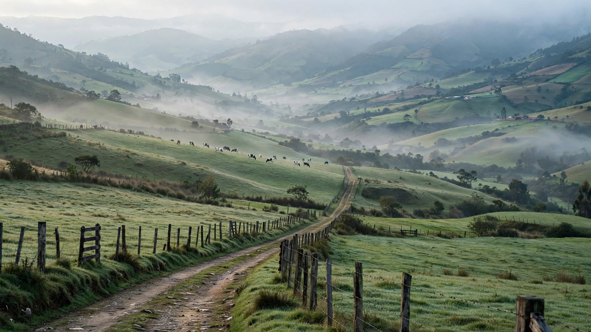

La producción está actualmente baja (temporada seca). En un mercado normal, menos oferta debería traducirse en mejor precio para quien produce. En Susa y Simijaca ocurre lo contrario: el campesino recibe menos que el promedio nacional justo cuando tiene menos leche para vender — la escasez está beneficiando a alguien más en la cadena, no al productor.
El Estado ya vigila el precio de la leche hasta el gramo de proteína, en tiempo real, cada mes (USP Leche, Ministerio de Agricultura). Lo que no tiene es presencia física en el punto exacto donde ese precio se decide, litro a litro, frente al campesino. Este centro no es una inversión — es la ocupación del único punto de la cuenca que hoy está vacío de Estado.
| Instrumento | Disposición relevante |
|---|---|
| Decreto 012 de 2006 (Plan Parcial vigente) | Predio zonificado como Área de Actividad Múltiple (U-M) |
| Artículo 41 — Asignación de usos | Comercio y Servicios clase II: uso principal |
| Artículo 35 — Definición de industria | "Transformación de materias primas o elaboración, ensamblaje y manufactura" — el acopio y enfriamiento NO transforma el producto |
Al no ser industria, el centro de acopio no requiere ningún trámite de cambio de uso de suelo. Es ejecutable de inmediato bajo la norma urbanística vigente.
El propio Decreto 012 de 2006 (Artículo 67) contempla la fiducia mercantil como instrumento para que una entidad estatal se asocie con particulares en la promoción y ejecución de proyectos — sin que el departamento tenga que desembolsar recursos de tesoro para adquirir el predio.
| Hito | Detalle |
|---|---|
| Febrero 2025 | Gobernación de Cundinamarca compra 400.000 litros directo a productores |
| Cobertura del piloto | 10 municipios de vocación lechera, 6 provincias |
| Beneficiarios | Más de 1.500 personas, 19 asociaciones |
Marca Cundinamarca ya demostró que el modelo funciona. Este centro lo convierte de respuesta de emergencia en infraestructura permanente.
Que la Gobernación de Cundinamarca (Agencia de Comercialización y Competitividad) o el Ministerio de Agricultura estructuren, junto con el propietario, una fiducia mercantil para instalar el Centro de Acopio, Frío y Compra Justa de Leche en el predio de Ubaté — dándole infraestructura permanente al modelo que el departamento ya validó en 2025.
Las cifras presentadas son estimaciones y datos públicos de referencia (Asoleche, Fedegán, USP Leche, Minagricultura, Gobernación de Cundinamarca). Los valores definitivos del proyecto están sujetos a estudio técnico y financiero detallado antes de su ejecución.